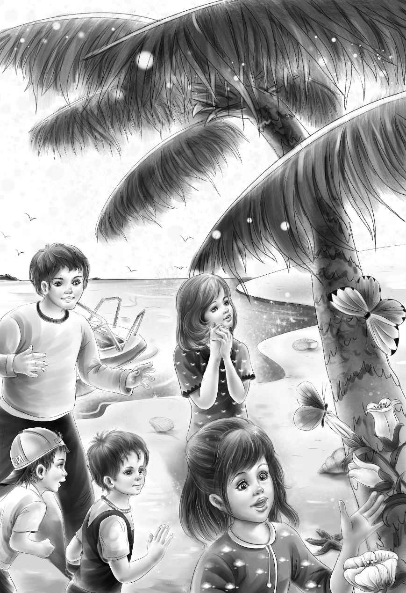

The Lifeboat
“纳思，我们要做什么准备？”当大家都围坐在甲板上时，班尼问道。
“首先，我们要带上一艘最大的救生艇。”纳思说。
“我们喜欢做这个！”杰西的两眼闪耀着兴奋的光芒，“除此之外，还要带什么？”
“还要带很多很多的食物，”纳思答道，“这样我们就不至于整天吃香蕉了。”
“香蕉？”班尼叫了起来，“我喜欢每天吃香蕉餐！”
“放心吧，你随时都能吃到。”纳思笑了，“整座小岛到处都生长着香蕉，无论你什么时候想吃，一伸手就能摘到。”
迈克兴奋地说：“哦，天啊！咱们快上岛吧！快出发吧！”
奥登先生看了看孩子们，然后说：“纳思，我们一切行动都听你的指挥。你就是我们的头儿。”
“很好！”纳思说，“我欣然领命！除了我刚才说的以外，还要带鞋子，大家千万别带薄底儿鞋，因为在岛上很有可能会踩到尖石块和贝壳。也别带贵重衣服，穿运动服就行了。我来负责打包食物。”
“哦，纳思，我和你一起打包食物吧！”迈克央求道。
“还有我，”班尼喊着，“我的衣服马上就可以整理好。”
“好吧，你们俩过来帮我！衣服打包好以后就到厨房来。”
布朗船长笑着说：“别忘了带上七张毯子。”
“岛上很冷吗？”维莉问。
“不冷，岛上热得很，”船长说，“不过毯子可以铺在地上当褥子用。”
班尼和迈克整理好各自的小箱子后，便跑到厨房去找纳思。
“好香啊！”迈克说，“这些东西看起来很好吃！”
“但愿如此，”纳思说，“现在，我们首先要带上的是这些奶粉。”
纳思递给迈克一堆小罐子，让他装到大箱子里去。
“纳思，再带几瓶焗黄豆罐头吧，”班尼建议道，“我们都爱吃这个。”
“和我想到一块儿去了，”纳思走到舱底，“咱们不方便带面包，只能带焗黄豆罐头。”
“反正我也不怎么爱吃面包。”迈克说。
班尼诧异道：“哈，不是吧？我曾见过你一口气吃掉十片面包呢！”
“哼，你不也一样？”迈克嚷道。
“好了，别斗嘴啦！”亨利打着圆场，“万事和为贵嘛！”
杰西看了看那些罐子和盒子。“带些麦片吧，”她提议道，“麦片能吃上好几天！”
“还有压缩饼干。”纳思说着，递给迈克两个铁盒子。
“压缩饼干？”迈克看了看盒子上的图案，“我管你的‘压缩饼干’就叫做‘饼干’。”
“迈克先生，这些的确是‘压缩饼干’。”纳思说。
“好吧，”迈克说，“随便你，我就叫它们‘饼干’，反正只要我自己知道这是什么就行。”
“别忘了火柴。”亨利将火柴也放进了大箱子。
纳思说：“是啊，这玩意儿生火用得着，咱们捕了鱼以后还得烤着吃呐。”
“这么说起来，咱们还需要带盘子。”杰西说。
“别带太多东西，”纳思说，“我们可以用树叶当盘子。但是大勺子和餐刀必须得带，还有砍树用的大砍刀。”
终于，大箱子被装得满登登的，一切齐备。孩子们来到甲板上，在椅子上坐了下来。
纳思说：“咱们很快就能看到小岛了，从这个方向望过去，别让护栏挡住视线——刚开始小岛是若隐若现的。”
孩子们顺着纳思指的方向望去，可是打量了半天，他们除了湛蓝的海水以外，什么都没看到。
终于，纳思最先发现了小岛，但他并没有作声，只是静静地等着，看哪个孩子会成为第二个发现者。就在这时，亨利走到护栏边，问道：“纳思，那边是陆地还是我看花了眼？”
“是陆地，没错。”纳思笑着回答，“我们很快就能看到绿色的棕榈树和圆形的大海湾了。我告诉过你们吧，小岛刚开始是若隐若现的。”
大家一起走到护栏边，紧盯着那个绿色的小点。过了差不多一个小时，他们才清晰地看到了小岛周围白色的沙滩，以及不断拍打着沙滩的海浪。
随着“海星号”离岛屿越来越近，岛上的景物也越来越明晰，只见高大的棕榈树弯着腰，树叶轻拂在海面上。这时，大船停了下来，船员们开始将救生艇放下去，并把毯子和大箱子放到救生艇上。奥登一家人和四名水手沿着梯子下到救生艇上，坐了下来。
另外一艘救生艇拴在他们的救生艇上，这是供水手们返回大船时用的。
纳思对亨利说：“坐稳了，看我是如何掌舵的。”
“遵命，船长！”亨利说。
布朗船长冲着救生艇喊道：“只用等两三个星期，我们就会过来接你们。要是咱们在路上耽搁了，你们也别慌！”
“别来太早啦，”迈克说，“这里太好玩了，我们都不想太早回去。”
“但愿如此！”船长笑着说，“你们要多听听纳思的建议，他懂的多。”
船员们解开了绳索，救生艇开始乘风破浪地向小岛驶去。
“纳思，我们会有危险吗？”维莉问。
“没事儿，维莉小姐，不用害怕！但我们有可能会变成落汤鸡。”
“我才不怕变成落汤鸡呢！”班尼说，“只是，咱们为什么会那样呢？难道大家会掉到水里去吗？”
“那倒不会——只要你坐稳了，就掉不下去。”纳思答道，“不过待会儿上岸的时候，咱们要走点水路。你们还得帮我扛点东西呐！”
杰西说：“纳思，没问题！就算我们全身湿透了，天这么热，衣服也很快会被晒干的。”
大家回头看了看“海星号”，它已经离得越来越远了，孩子们纷纷朝布朗船长挥手告别，亨利突然发现维莉手里提了一只大布口袋。
“维莉，袋子里装的是什么？”他问道。
“保密！”维莉说。
“别，快告诉我们吧！”班尼央求道。
“不行啊，班尼，”维莉说，“这是我的秘密，我对谁都不说的！”
“班尼，别烦她啦！”迈克说，“要是维莉想保守秘密，就由她去吧！我还不想知道呢！”
于是，大家一起望向海岛，它已经离得越来越近了，小岛的一侧堆满了巨大的岩石，郁郁葱葱的棕榈树点缀其中，四面是蔚蓝的海水。
“我从来没见过这么蓝的海水呢！”杰西感叹道。
“你肯定没见过，”纳思说，“人们都说这里的海水是全世界最蓝的，因此给它取名为‘蓝色海湾’。现在，请大家将鞋子脱下来放在船上，跳下去，准备推船上岸啦！”
高高的海浪一波接一波地将救生艇推向岸边，纳思用尽气力划了最后一桨，便高声指挥道：“跳吧！”
大家一个接着一个跳进海里。抬船的时候，奥登先生居然不顾年迈，选了较重的一边。随着纳思“加油”的号令声，水手们在众人的帮助下用力一推，救生艇便滑到了沙滩上。
“完美！”纳思赞道，“顺利上岸！”
这时，每个人都浑身湿透了。
班尼满不在乎地说：“太阳这么大，咱们很快就会被晒干的。”
“我才不要被晒干呢，”迈克说，“我就想在水里扑腾。”
完成任务的水手们此时已经坐上另一艘救生艇，返回大船。
“大家过来一下吧！”纳思说，“班尼，迈克，你们也来！”纳思的脸上没有一丝笑容，等所有人都到齐了以后，他才严肃地说：“你们绝不能由着性子随便下海玩。”
“我明白，”亨利说，“因为海里有鲨鱼！”
“说得对！看来你们已经从书里了解了一些与大海有关的知识。”纳思似乎有点惊讶，“待会儿我要带你们去个好地方。不过现在我们还有得忙，头一件重要的事就是要找今晚睡觉的地方。快，时间不多啦！”

大伙儿举目四望，欣赏着白色沙滩上的美景。
“多美的沙滩啊！”维莉轻轻感叹道。
小岛上视线所及的地方全覆盖着郁郁葱葱的棕榈树，或鲜红、或嫩黄、或洁白的鲜花在树上绽放。孩子们欣赏着绿树、花儿和蝴蝶，而纳思和奥登先生则被香蕉树、猴面包树和椰子树吸引住了视线。正在大家目不暇接的时候，一群蓝色的小鸟扑棱棱振翅飞向了空中，它们有着橙色的大喙，却没有发出一声鸣叫。
纳思说：“这些小鸟不会唱歌，只是虚有其表罢了。”
正在这时，迈克大声叫了起来：“两间房子！瞧！那边有两间房子！”